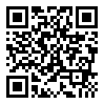

Çoğu bilgisayarda gerekli sensörler bulunmaz. Mobil cihazınızda devam etmek için QR kodunu taratın.

Su Terazisi Nedir?
Su terazisi (veya kabarcıklı terazi), bir yüzeyin tam olarak yatay (düz) veya dikey (şakül) olup olmadığını kontrol etmek için kullanılan bir araçtır. İnşaat, marangozluk ve ev tadilatı için vazgeçilmez bir araçtır.
Geleneksel bir su terazisinde içinde kabarcık bulunan küçük bir cam tüp vardır. Kabarcık çizgiler arasında ortalanmışsa yüzey düzdür. Bu online su terazisi, aynı işlemi yapmak için telefonunuzun sensörlerini kullanır; ancak dijital hassasiyetle.
Bu Online Kabarcıklı Teraziyi Nasıl Kullanırsınız
Bu online kabarcıklı terazi, telefonunuzu hassas bir su terazisine dönüştürür. Bir yüzeyin düz olup olmadığını kontrol etmek için cihazınızın yerleşik sensörlerini kullanır. Uygulama kurulumu gerekmez — doğrudan tarayıcınızda çalışır.
Temel Özellikler
Anlık Ölçümler: Telefonunuzu bir yüzeye yerleştirir yerleştirmez gerçek zamanlı açı okumaları alın.
İki Mod: Düz yüzeyler için 'Yüzey Modu', dikey yüzeyler için 'Duvar Modu'nu kullanın.
Basit Arayüz: Sanal kabarcık, tıpkı gerçek bir su terazisi gibi net bir görsel rehber sunar.
Sıfırla Düğmesi: Teraziyi herhangi bir yüzeye veya kamera çıkıntısını telafi etmek için kalibre edin.
Sesli Uyarılar: Bir yüzey tam düz olduğunda sesli bip uyarısı alın.
Hassasiyet Hakkında Bir Not
Bu online terazi çoğu kendin yap projesi için mükemmel olsa da, profesyonel ve kalibre edilmiş bir su terazisinin yerini alamaz. Hassasiyet telefonunuzun sensörlerine bağlıdır ve küçük sarsıntılar okumayı etkileyebilir. En iyi sonuçlar için aşağıda açıklanan kalibrasyon tekniklerini kullanın.
Bileşenleri Anlamak
Bu online su terazisinin iki ana modu vardır: Yüzey ve Duvar. Her modun bileşenlerine ilişkin hızlı bir kılavuz aşağıdadır.
Yüzey Modu
Dairesel Kadran: Yüzey açısını tüm yönlerde gösteren bir hedef terazisi.
Ana Kabarcık: Dairesel kadranda bulunan kabarcık. Merkezde olduğunda yüzeyiniz düzdür.
Dikey ve Yatay Teraziler: Eğim (öne-arkaya) ve yatış (sola-sağa) açılarını gösteren iki dikdörtgen terazi.
Derece Göstergesi: Yüzeyin tam açısını derece cinsinden gösterir.
Duvar Modundaki Öğeler
Duvar Terazi Kutusu: Dikey yüzeyleri kontrol etmek için klasik su terazisi arayüzü.
Duvar Kabarcığı: Duvar terazisindeki kabarcık. Mükemmel dikey açıyı bulmak için çizgiler arasında ortalayın.
Duvar Derecesi: Tam dikey açıyı derece cinsinden gösterir.
Online Su Terazisi ile Yüzey Nasıl Hizalanır?
'Yüzey' Modunu Seçin: Mod kaydırıcısında 'Yüzey' düğmesinin etkin olduğundan emin olun.
Cihazı Yerleştirin: Akıllı telefonunuzu veya tabletinizi ölçmek istediğiniz yüzeye düz olarak koyun.
Okumaları Gözlemleyin: Kabarcık ve derece göstergeleri eğimi gerçek zamanlı olarak gösterecektir.
Yüzeyi Ayarlayın: Ana kabarcık dairesel kadranın merkezine gelene ve her iki derece okuması da 0,0° gösterene kadar yüzeyi hareket ettirin veya ayarlayın.
Duvardaki bir çerçeve nasıl hizalanır?
'Duvar' Modunu Seçin: Mod kaydırıcısında 'Duvar' düğmesinin etkin olduğundan emin olun.
Cihazı Yerleştirin ve Başlat'a Tıklayın: Akıllı telefonunuzu veya tabletinizi ölçmek istediğiniz dikey yüzeye dik olarak yaslandırın ve başlat düğmesine basın.
Okumaları Gözlemleyin ve Yüzeyi Ayarlayın: Duvar kabarcığı ve derece göstergesi dikey eğimi gerçek zamanlı olarak gösterecektir. Duvar kabarcığı ortaya gelene ve derece okuması 0,0° gösterene kadar öğeyi veya cihazınızı ayarlayın.
Ölçüm Hassasiyeti Nasıl Artırılır
Basit bir iki adımlı kalibrasyon yöntemi kullanarak ölçümünüzün hassasiyetini önemli ölçüde artırabilir ve sensör kaymasını telafi edebilirsiniz.
Bu işlem, telefonun yerleşik sıfır-ofset hatasının büyük bölümünü etkili biçimde iptal eder.
Birinci Ölçüm: Telefonunuzu ölçmek istediğiniz yüzeye koyun ve açı okumasını not edin (ör. 0,8°).
İkinci Ölçüm: Kaldırmadan telefonunuzu aynı yerde tam 180° döndürün ve ikinci bir okuma alın (ör. -1,0°).
Gerçek Ofseti Hesaplayın: Gerçek açı, bu iki ölçümün ortalamasıdır. Örneğin: (0,8 + (-1,0)) / 2 = -0,1°. Bu, yüzeyinizin düze çok yakın olduğunu gösterir.
Sensör hatalarını gidermek ve daha doğru ölçüm elde etmek için 180° döndürme yöntemini kullanın.
Çıkıntılı Kameralar için Ayarlama
Modern akıllı telefonlarda genellikle kamera çıkıntıları bulunur ve bu durum telefonun tam düz yatmasını engeller. Bu durum doğru ölçümleri olumsuz etkileyebilir; ancak aşağıda gösterildiği gibi Sıfırla düğmesini kullanarak bunu kolayca düzeltebilirsiniz.
Yerleştirin ve Gözlemleyin: Telefonunuzu yüzeye koyun. Kamera çıkıntısının hafif ve sabit bir eğim oluşturduğunu, sıfır olmayan bir okuma gösterdiğini fark edeceksiniz.
Sıfırla'ya Basın:Sıfırla düğmesine dokunun. Bu, su terazisine telefonun mevcut eğimli konumunu yeni "0°" referans noktası olarak kabul etmesini söyler.
Doğru Ölçüm Yapın: Gösterge artık 0° okuyacaktır. Kamera çıkıntısının etkisi iptal edilmiş olup yüzeye göre doğru ölçümler yapabilirsiniz.
Kamera çıkıntısının neden olduğu eğimi telafi etmek için "Sıfırla"yı kullanın.
Su Terazisini Ne İçin Kullanabilirsiniz?
Online su terazisi çeşitli görevler için kullanışlı bir araçtır:
Resim Asmak: Fotoğraf ve sanat eserlerinizin tam düz olduğundan emin olun.
Mobilya Montajı: Masa, sandalye ve diğer mobilyaların sağlam ve düz olmasını sağlayın.
Cihaz Hizalama: Çamaşır makinelerinin titremesini önleyin ve buzdolaplarının verimli çalışmasını sağlayın.
İnşaat ve Marangozluk: Duvarların şakülde, zeminlerin düz olup olmadığını kontrol edin.
Fotoğrafçılık: Kameranızı tripod üzerinde hizalayarak eğik çekimlerden kaçının.
Sıkça Sorulan Sorular
Sensör erişimine izin verin, Ölçmeye Başla'ya basın ve cihazınızı 'Yüzey Modu' ile yüzeye yerleştirin.
Kabarcık merkeze gelene ve hem yatay hem dikey okumalar 0 derece gösterene kadar yüzeyi ayarlayın; hizalandığında sürekli bip sesi duyarsınız.
Resimli ayrıntılı talimatlar için yukarıdaki bölüme bakın.
Sensör erişimine izin verin, Ölçmeye Başla'ya basın ve cihazınızı 'Duvar Modu' ile çerçeveye yerleştirin.
Kabarcık merkeze gelene ve okuma 0 derece gösterene kadar çerçeveyi ayarlayın; hizalandığında sürekli bip sesi duyarsınız.
Resimli talimatlar için yukarıdaki bölüme bakın.
Online su terazisi, sayfanın üstündeki
sesli geri bildirim seçeneğiyle gelir;
kabarcık merkeze yaklaştıkça bip sıklığı artar ve tam merkezde sürekli bir ton çalar.
Hassasiyet, cihazınızın ivmeölçer kalitesine bağlıdır. Çoğu kendin yap ve hobi görevi için oldukça hassastır. Yüksek hassasiyet gerektiren işler için kalibre edilmiş özel bir su terazisi önerilir. Daha iyi sonuçlar için 180° döndürme kalibrasyon yöntemini kullanın.
Evet, tüm sensör verileri tarayıcınızda doğrudan cihazınızda işlenir. Sunucularımıza hiçbir bilgi gönderilmez. Ölçümleriniz tamamen gizlidir.
Telefonunuzu yüzeye koyun, okumanın dengelenmesini bekleyin, ardından Sıfırla düğmesine basın. Bu, kamera çıkıntısının etkisini kalibre ederek doğru ölçümler yapmanızı sağlar.
Resimli ayrıntılı talimatlar için yukarıdaki bölüme bakın.
%100 Gizli ve Güvenli
Gizliliğinize önem veriyoruz. Tüm sensör verileri tarayıcı tarafından doğrudan cihazınızda işlenir. Sunucularımıza hiçbir zaman bilgi gönderilmez. Yalnızca kaç kişinin bu web sitesini kullandığını sayarız.
İletişim
Bu online su terazisi, bir yüzeyi veya çerçeveyi hizalama gibi gerçek hayat problemlerini çözmek amacıyla geliştirilmiştir.
Herhangi bir sorunuz veya görüşünüz varsa lütfen
contact@pvfreund.com adresinden benimle iletişime geçin.
Diğer projelerim arasında kendi güneş enerjisi sisteminizi tasarlayıp finansal fizibilite hesabı yapmanızı sağlayan
PV Freund adlı bir web uygulaması bulunmaktadır.
Bunların yanı sıra, tarayıcınızda çalışan ve bir yüzeyin eğimini ölçmenize yardımcı olan bir
İnklinometre ile mevcut yüksekliğinizi gösteren bir
Altimetre de tasarladım.
Sensör Erişimi Gerekli
Bu uygulamanın çalışabilmesi için cihazınızın hareket sensörlerine erişim izni gereklidir.